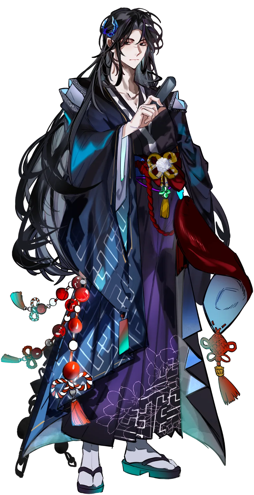
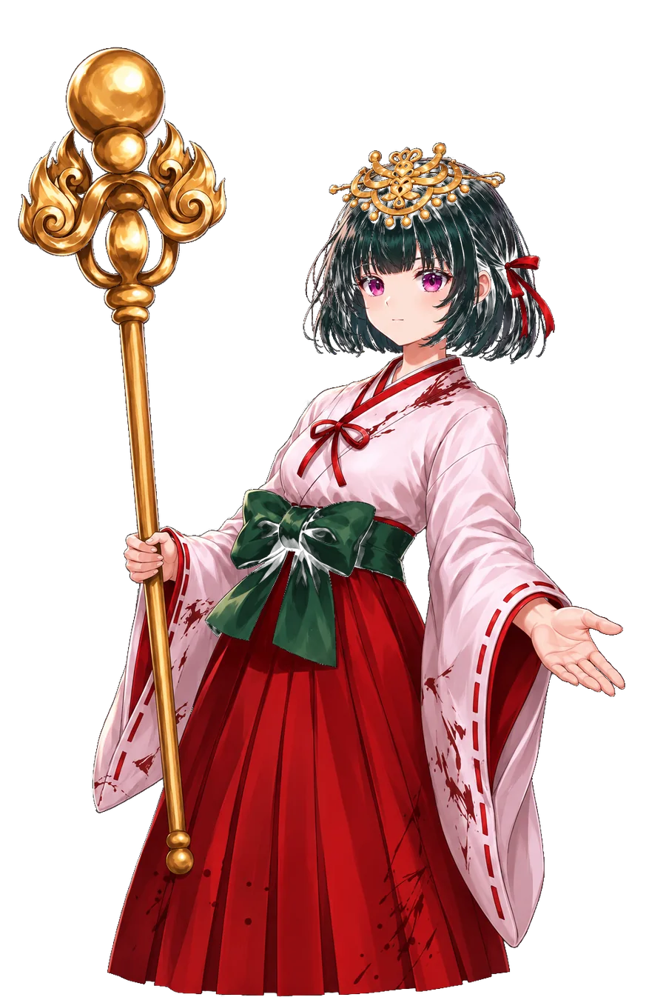
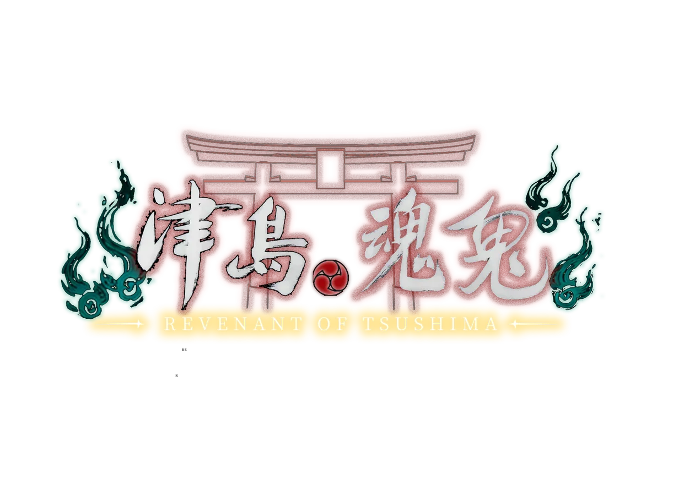

♪ MUSIC OFF
AURORA STUDIO · UI PROTOTYPE
EN / 日本語 / 繁中

BETWEEN THE LIVING AND THE LOST
CURRENT OBJECTIVE
[ E ] INVESTIGATE
霊
ETHER SIGHT / 霊視
J Journal · I Inventory · Q Ether Sight · D Dialogue · Esc Pause
ESC · BACK
INVESTIGATION
調査記録
© AURORA STUDIO · HTML5 SIMULATOR
LAYOUT · F3
THE VEIL REMEMBERS
LOADING THE VEIL
0%
THE SPIRITS ARE AWAKENING · 25 SECOND SIMULATED LOAD
SIMULATOR · F2
 THE VEIL REMEMBERSTHE VEIL REMEMBERS
THE VEIL REMEMBERSTHE VEIL REMEMBERS